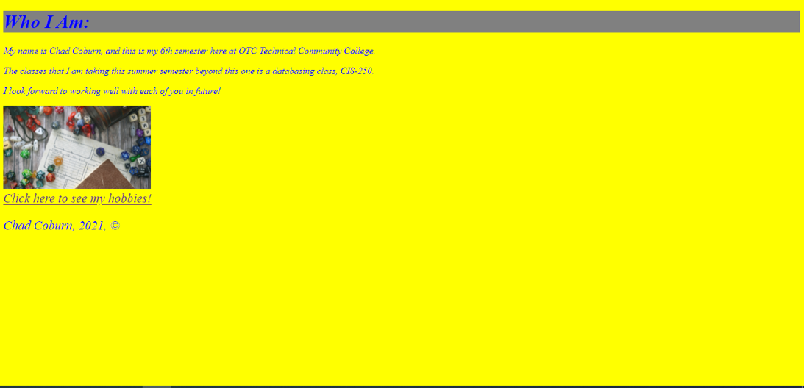

Chad Coburn

My Academic Accomplishments
As far as my academic accomplishments, I would list out the following:
- Classes within my field of study have been in a wide variety of topics regarding Information Technology, including SQL and databasing, cloud computing, programming in several languages, along with more elective courses in between like international politics, history and English.
- Throughout my tenure as a student, I have been involved in a lot of class related projects in preparation and to properly learn all of the skills and talents needed for the IT department, including but not limited to creating an SQL database and data model, certifying in managing an Amazon AWS cloud computing server, and numerous applications of coding, including this very website, where I demonstrate the various lessons I learned in my web development class, such as media viewports to edit sites for mobile views, grids and flexboxes, validation of both HTML5 and CSS in order to make sure they work as best as they can in everyone's browsers, and proper layout and style design in CSS to name a few. Overall, it was an amazing experience and it was incredible to see how far I have come in regards to how I have improved my craft since my first website submission in CIS-130.

My initial knowledge at the start of my web development compared to now
Rooms Available:
Going into my technical skills learned in my tenure as a student at OTC, they are as follows:
- Efficiency and knowlwedge in several computer programming languages, including Python, C++, C#, HTML5/CSS and SQL.
- Experience with cloud computing using server services from Amazon AWS.
- Experience with databasing, including creating data models and the relationships between entities.
- Overall literacy in technology and IT aspects.